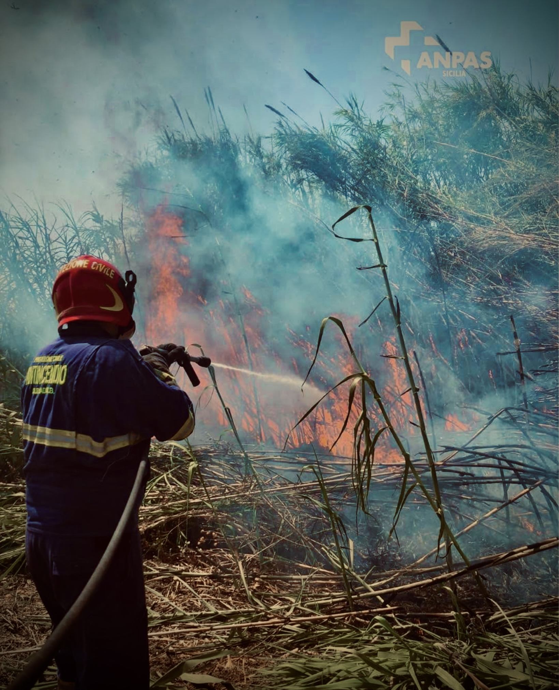

Monitoraggio ambientale, prevenzione dei rischi e operatività h24 a fianco della popolazione nelle situazioni di crisi.
Il cuore pulsante della nostra Associazione è rappresentato dall'impegno e dalla dedizione dei nostri operatori. Addestrati ad intervenire su scenari complessi, lavorano senza sosta a tutela del territorio, agendo in stretta sinergia con il Dipartimento Regionale della Protezione Civile.
Dallo spegnimento degli incendi boschivi durante la stagione estiva, all'allestimento di campi base nelle maxi-emergenze, i nostri mezzi e le nostre squadre sono strutturati per fornire una risposta rapida e altamente qualificata.

Pattugliamento estivo delle aree sensibili, monitoraggio dei focolai e squadre d'attacco rapido dotate di moduli idrici ad alta pressione per il contenimento degli incendi.
Squadre di terra pronte al battesimo del territorio impervio per la localizzazione e il recupero di persone scomparse, in stretto contatto con le Prefetture.
Allestimento tempestivo di campi di accoglienza per la popolazione, montaggio di tende pneumatiche, gestione di magazzini e distribuzione di vettovaglie.
Monitoraggio dei punti critici del territorio nicosiano durante le allerte meteo, rimozione di detriti stradali e svuotamento di locali allagati tramite idrovore.